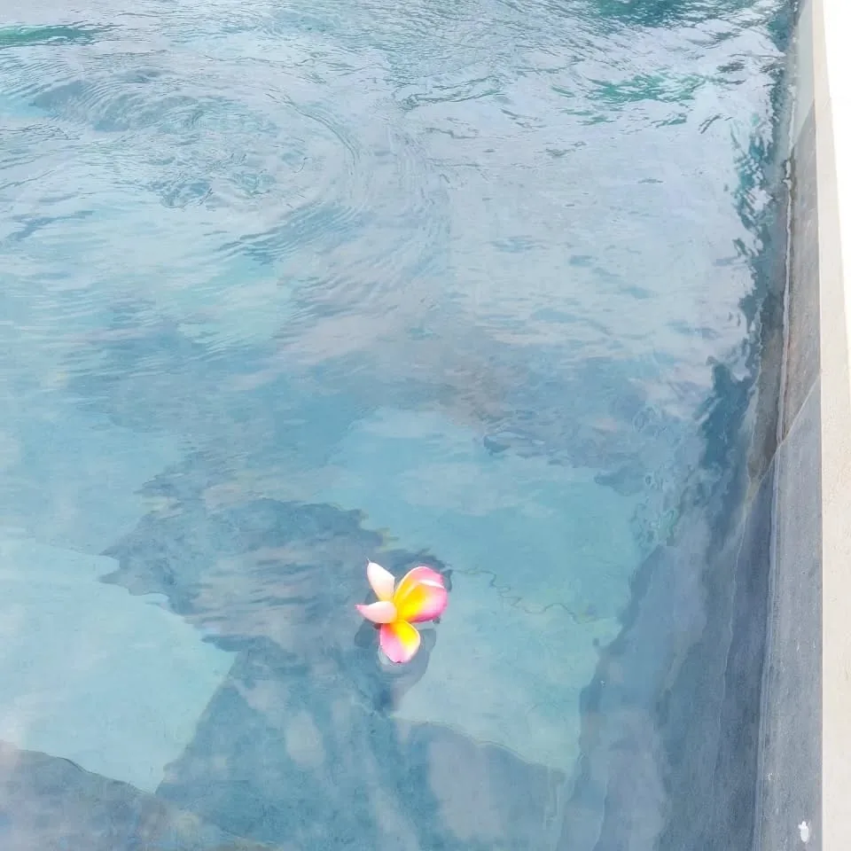
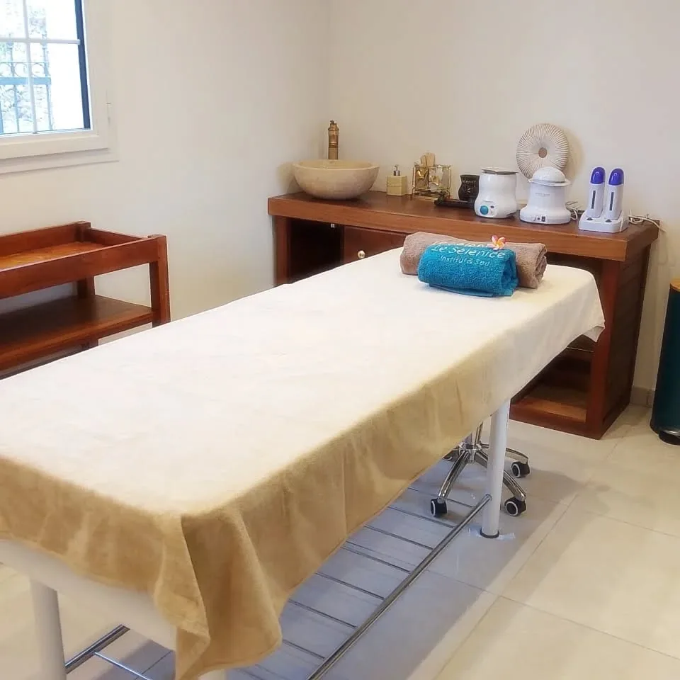
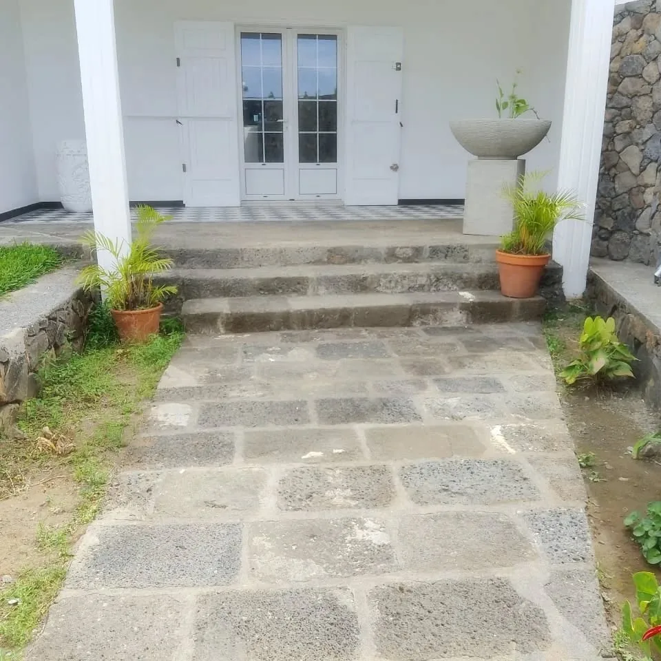
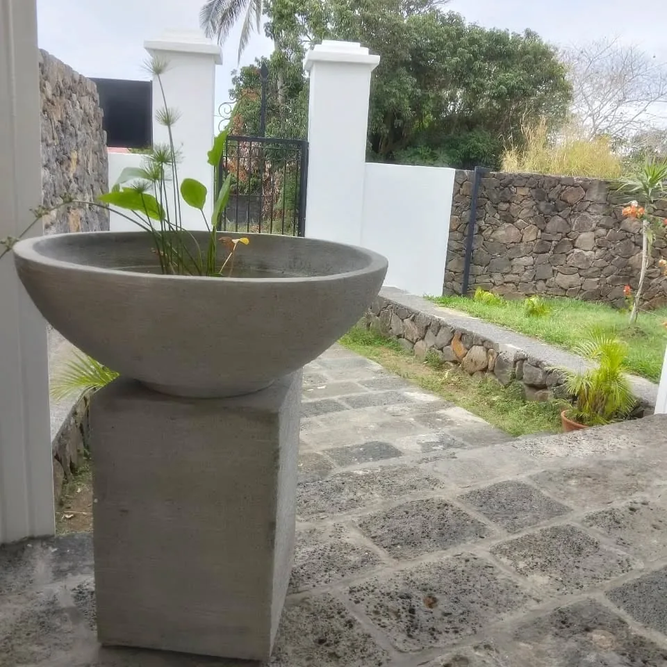
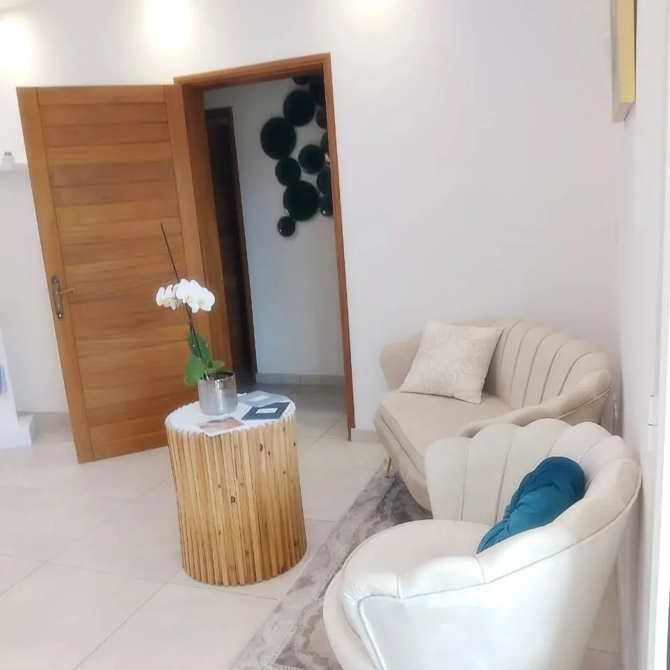
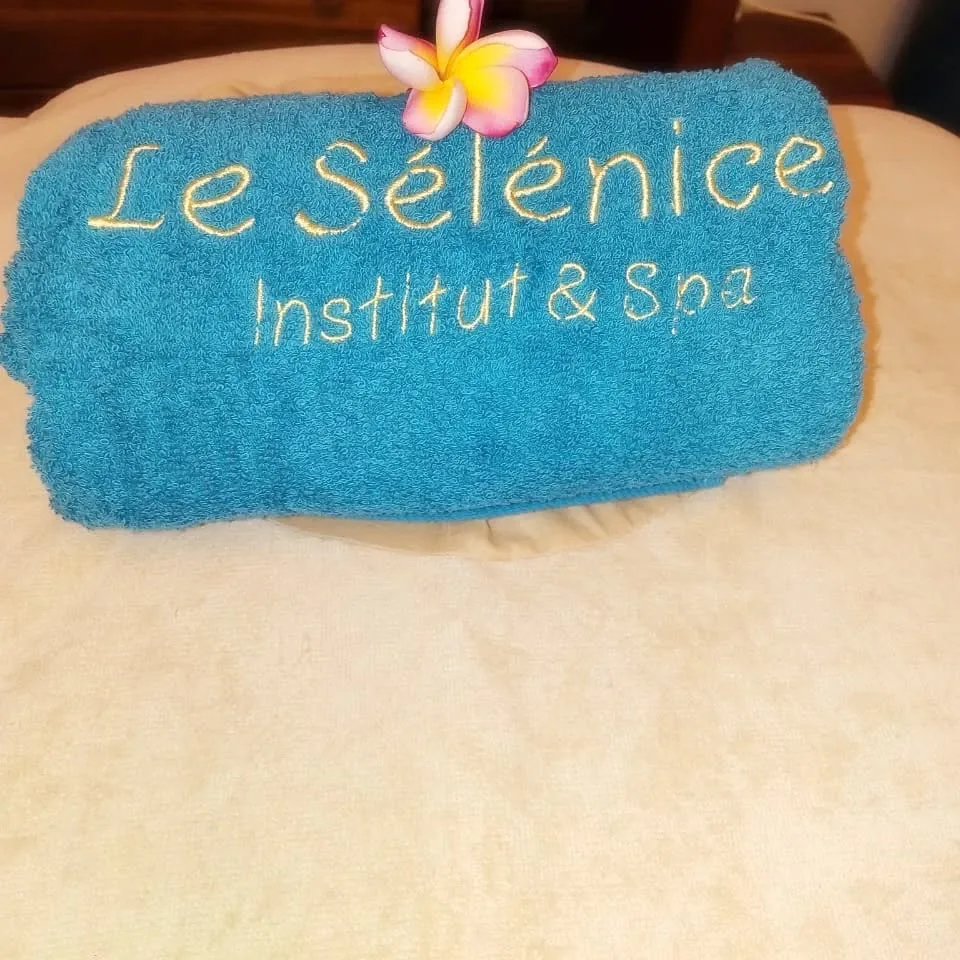
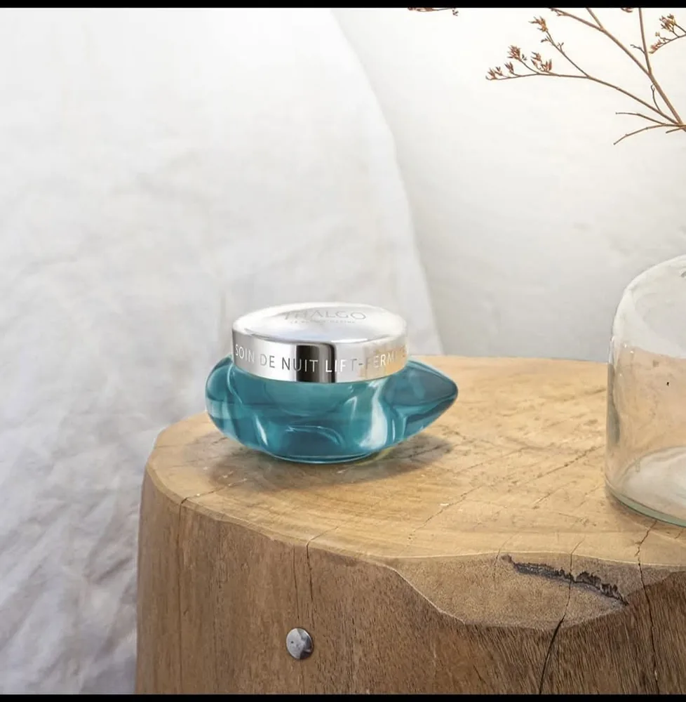
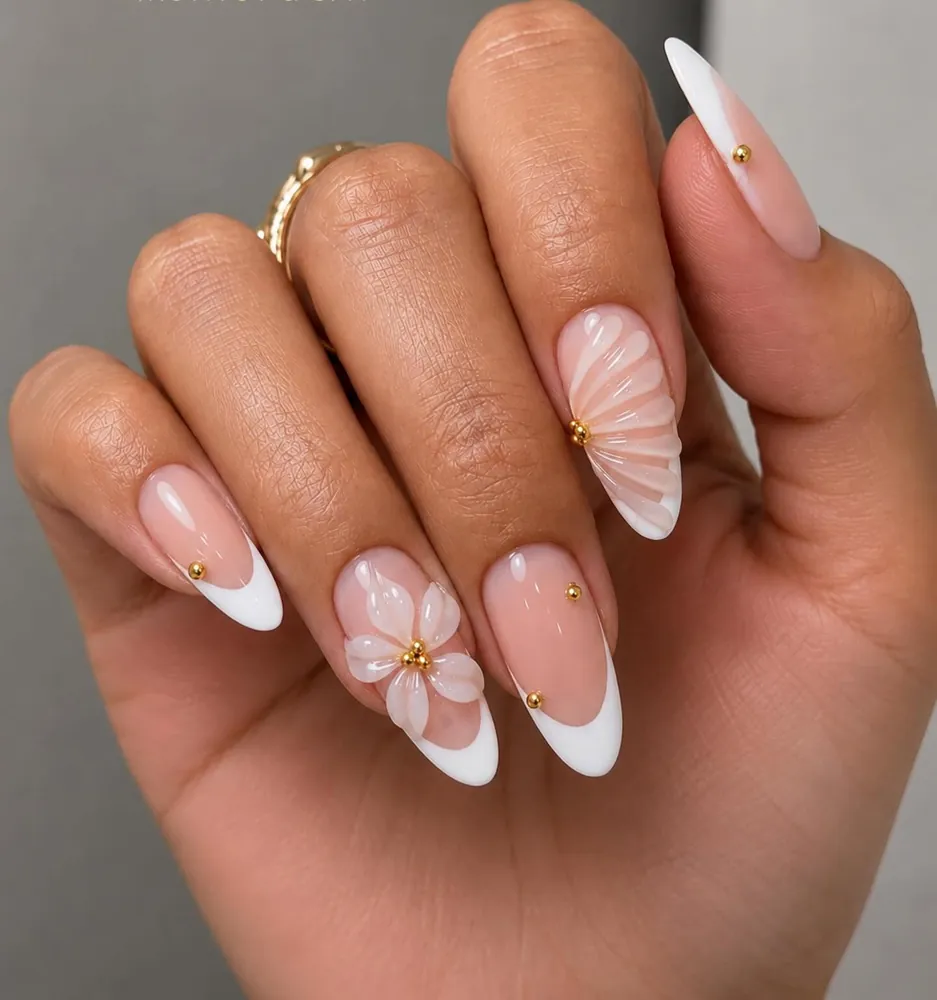
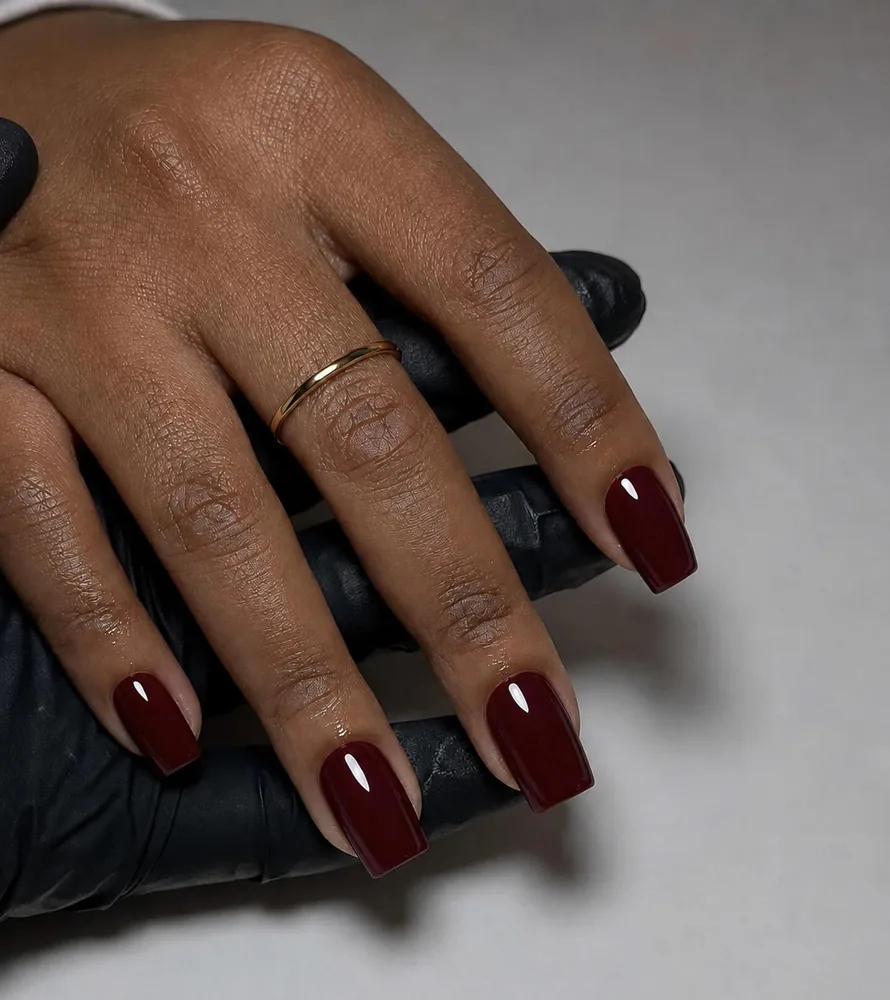

Dédié à la relaxation et à la beauté
Au 1574 chemin Lagourgue, Le Sélénice réunit un institut de beauté et un espace spa, pensés pour elle et pour lui. Un cadre intimiste pour se ressourcer, entre l'eau turquoise, la douceur des cabines et les soins aux actifs marins.
« Envie d'évasion et de lâcher-prise ? Offrez-vous une parenthèse hors du temps. »Le Sélénice, sur sa page Facebook
Une belle aventure qui a soufflé sa première bougie en octobre 2025.

Piscine, jacuzzi & sauna
Réservez l'espace détente, accompagné d'une boisson rafraîchissante offerte : un moment rien que pour vous, à deux ou entre amies.
Piscine chauffée
Une eau douce et turquoise, au milieu des palmiers et des murets de pierre.
Jacuzzi
Les bulles et la chaleur pour dénouer les tensions de la semaine.
Sauna
Une pause chaleur pour se relâcher pleinement.
Le spa se privatise aussi pour vos événements, comme un EVJF : renseignements et devis au 0692 03 05 74.
Des soins d'exception
- Soins du visage ThalgoDes soins experts enrichis en actifs marins, pour une véritable parenthèse de bien-être.
- Soins GuinotLes soins Guinot, à découvrir à l'institut.
- MassagesPour elle et pour lui, en solo ou en duo.
- Onglerie & spa des piedsPose de gel ou semi-permanent, French réinventée, nail art floral en relief.
- ÉpilationsSur rendez-vous à l'institut.
- Strass dentaires SwarovskiUne touche de brillance pour le sourire.

Le Sélénice, comme si vous y étiez







Faites glisser pour visiter →
Offrez un moment au Sélénice
Une parenthèse au bord de l'eau, un soin du visage ou une belle pose d'ongles : la carte cadeau se prépare simplement, par message.
Offrir une carte cadeauPrenez rendez-vous
Où
1574 chemin Lagourgue
97440 Saint-André, La Réunion